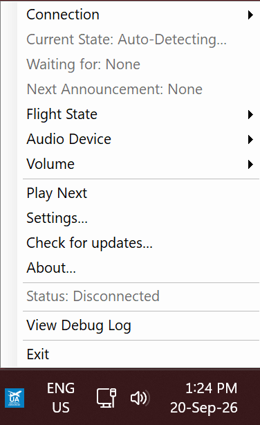
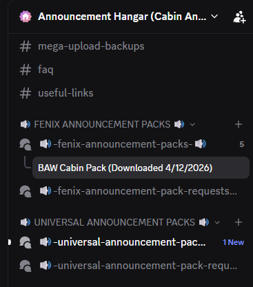
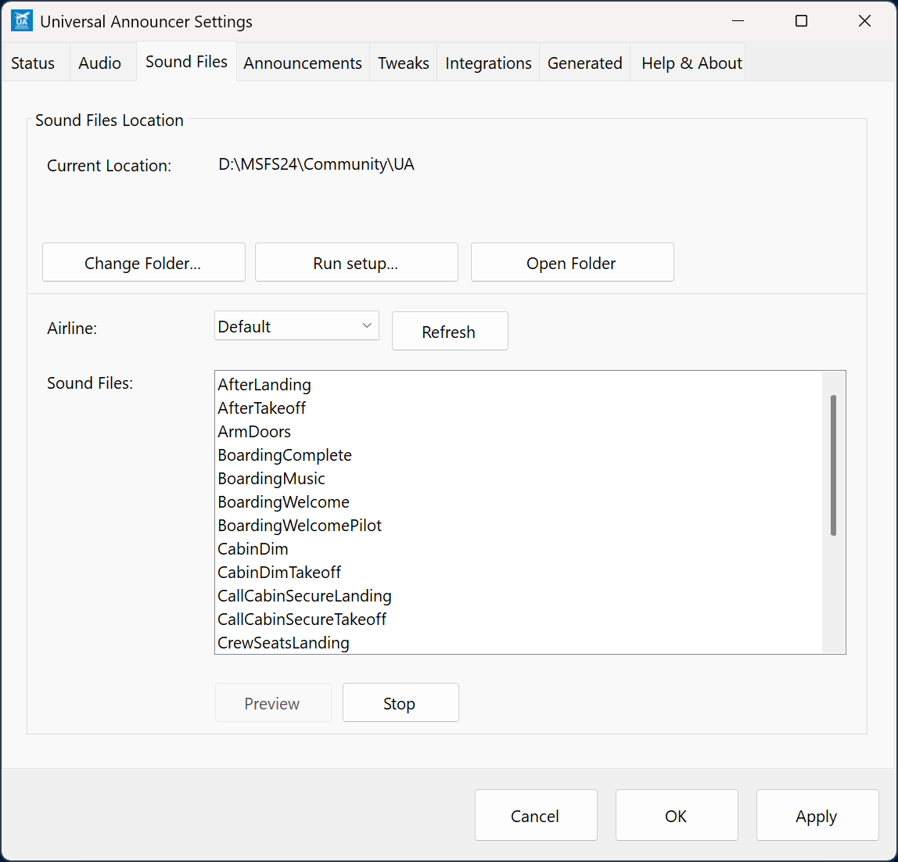
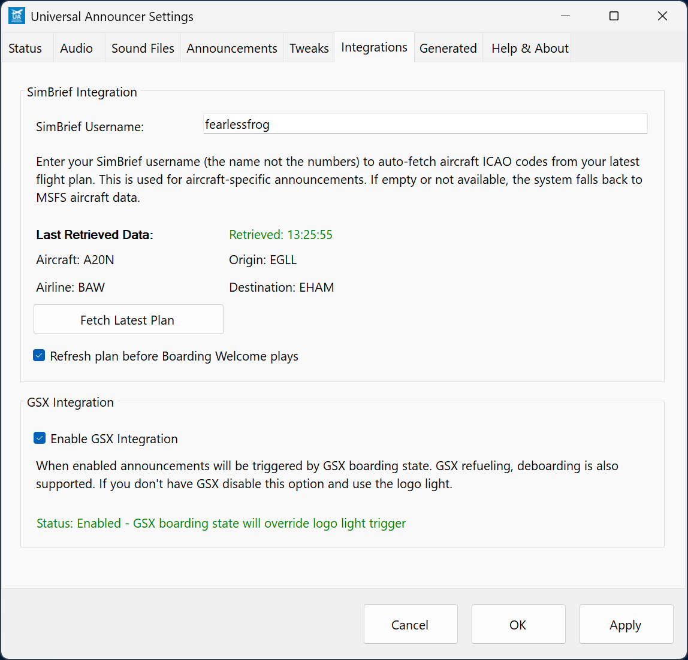
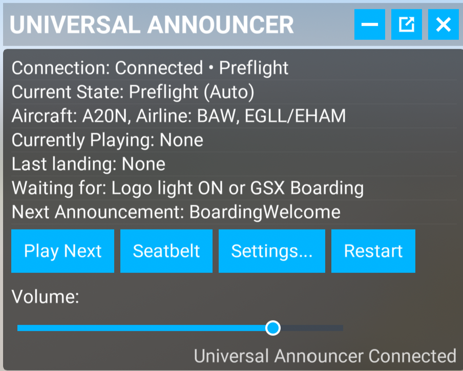
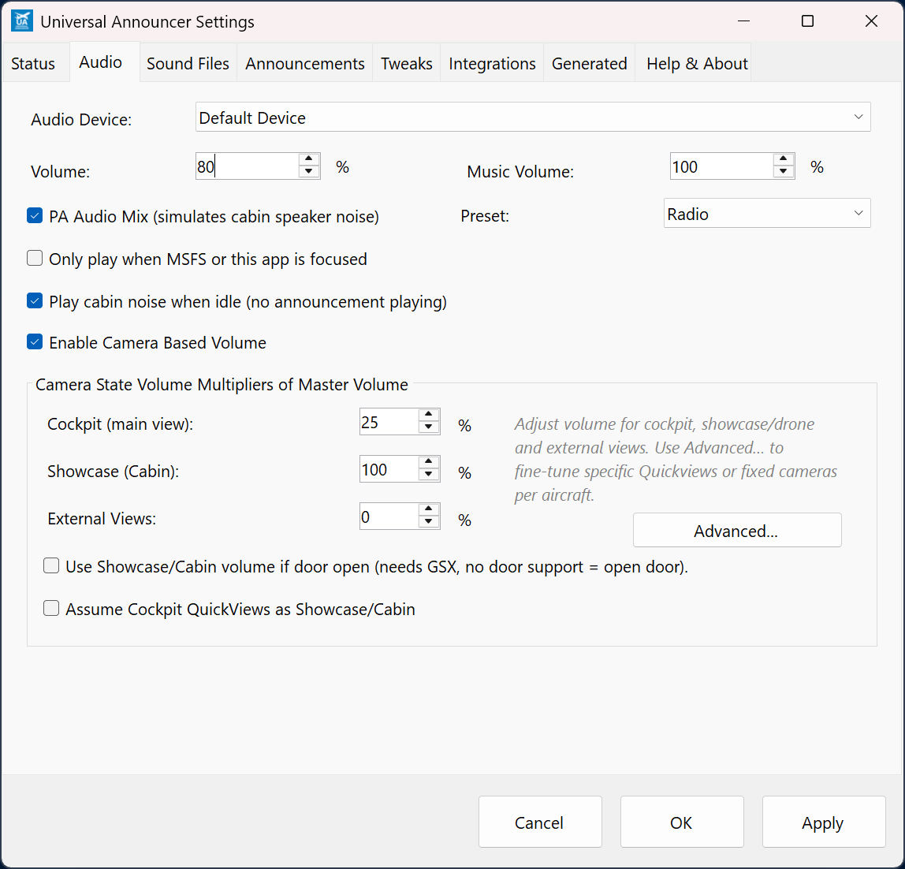
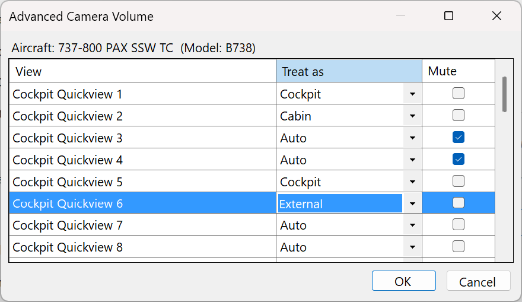
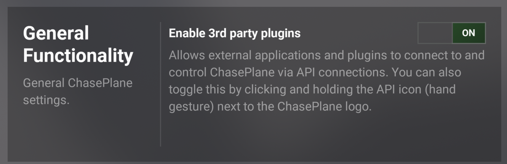
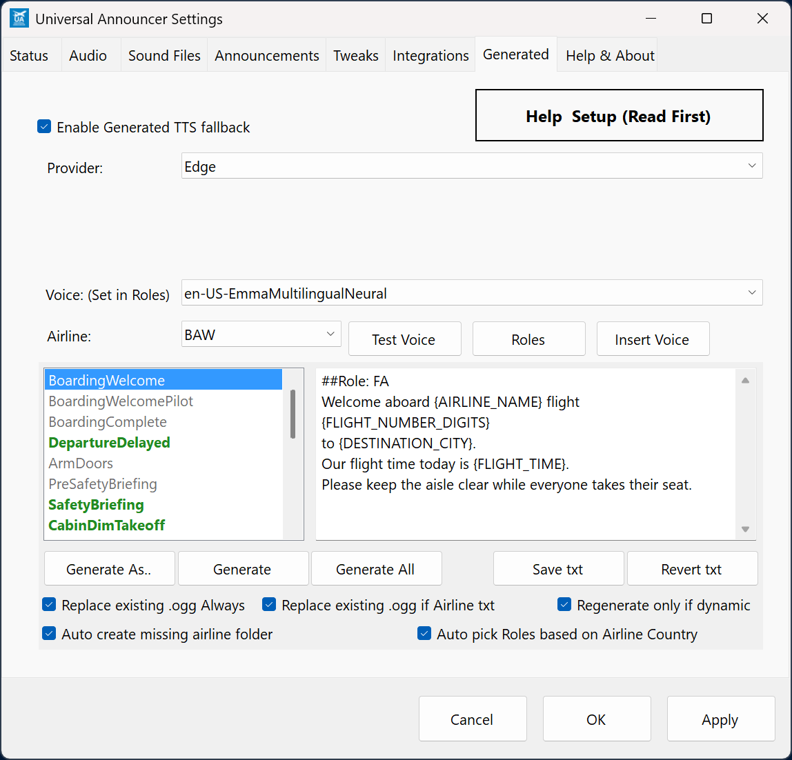
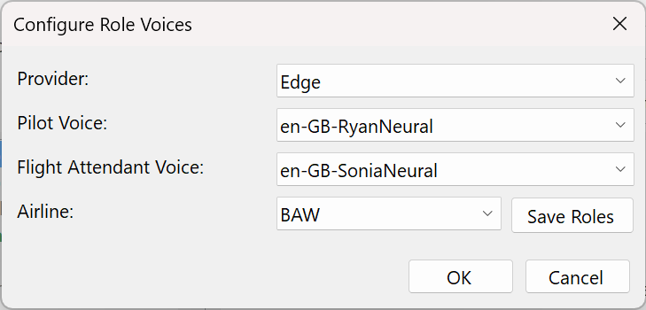

Universal Announcer
Cabin announcements for Microsoft Flight Simulator
Start with a sound pack, check your flight details, then let the app follow the flight. This manual covers installation, a typical airline flight, and the settings you are most likely to use.
App 0.9.9.7 | Revision 2026-09-20.7
Contents
Written for Windows users of MSFS 2020 and MSFS 2024. Button names follow the English interface. Optional aircraft and service integrations can behave differently between versions.
Back to contentsInstall and open the app
Universal Announcer runs beside the simulator. It reads flight information and plays cabin audio through your chosen Windows audio device. It works with default and add-on aircraft; Fenix ownership is not required. The announcement sequence is intended mainly for airliners.
Install
- Download the application ZIP from the GitHub releases page or the flightsim.to listing.
- Extract the whole ZIP into a folder you can write to, such as
D:\MSFS\UniversalAnnouncer. Do not run the executable from inside the ZIP or move it away from its accompanying files. - Run
UniversalAnnouncer.exe. The app is for 64-bit Windows 10 or 11. The normal self-contained release includes its .NET runtime; .NET 8 is not part of Windows by default. - Find its icon in the Windows system tray beside the clock. If it is hidden, open the tray's overflow area. Right-click the icon and choose Settings....
The main application stays outside the Community folder. Only the optional toolbar package goes into Community; see MSFS toolbar.
First launch

Use the setup dialog to install the default sound pack or select your existing Fenix files. You can run it again from Sound Files > Run setup.... Then choose an audio device on the Audio tab and play a preview on Sound Files.
Load a flight and check Status for a simulator connection. For the first test, start parked at a gate with the engines and beacon off. Leave camera-based volume disabled until a sound preview works.
Back to contentsClosing the Settings window does not necessarily exit the app. Use Close App or the tray menu's Exit when you want to shut it down. If a second launch says the app is already running, check the tray first.
Get sound packs
Default pack or existing Fenix files
The default pack is the quickest way to check the app without collecting airline packs first. Open Sound Files > Run setup... and use the download option.
If you already own Fenix, the setup dialog can use your installed announcement collection. Keep a backup before changing files you also use with another aircraft. Fenix ownership is not required to use Universal Announcer.
Community packs on Discord
Announcement Hangar is an independent third-party Discord server. It is not owned, operated or affiliated with Universal Announcer. Its community packs are supplied by their authors, not by Universal Announcer.

Join Announcement Hangar on Discord and follow the server's joining instructions. Packs from both announcement categories work with Universal Announcer:
- FENIX ANNOUNCEMENT PACKS
- UNIVERSAL ANNOUNCEMENT PACKS
Fenix-format packs are compatible, so you do not need to own Fenix or limit your search to the Universal Announcement Packs category.
Open the pack channel in either category, find the airline you want, and download its pack. Extract the ZIP and follow any instructions supplied by its author. The screenshot shows the two categories to look for.
Before installing a pack
Read the author's notes for supported aircraft and included announcements. A missing call does not mean the whole pack is unusable; packs contain different selections.
Keep original filenames and .ogg extensions unless you are deliberately changing their tags. Avoid leaving an extra wrapper folder after extraction, such as BAW\BAW\.... Use the folder layout on the next page.
Set up and preview sounds
On Sound Files, use Change Folder... to select the parent containing Default and the airline folders. The parent can have any name; the example below calls it UA.

Announcements/ <- select this parent
Default/BoardingWelcome.ogg
BAW/BoardingWelcome.ogg
UAL/BoardingWelcome.ogg
Airline folders go beside Default, not inside it. BAW and UAL are three-letter ICAO airline codes.
Click Refresh, choose an airline and select a file, then click Preview. No file is selected in the screenshot, so Preview is disabled. Test Default too. On Announcements, enable Use Default folder announcements if airline-specific files are missing if you want that fallback.
Back to contentsLoad your flight details
SimBrief is optional. It supplies the airline, aircraft, route and planned duration, including values used in generated announcements.
- Create and generate your plan in SimBrief. Check its airline, callsign, aircraft and airports.
- Open Settings > Integrations. Enter your SimBrief Username, using the name rather than the numeric pilot ID. No SimBrief password is entered here.
- Click Fetch Latest Plan. Check the returned aircraft, airline, origin and destination. Successfully fetching yesterday's plan still gives you the wrong flight.

Refresh plan before Boarding Welcome plays performs another fetch at boarding. Fetch manually first while learning the setup.
The detected airline selects its sound folder: BAW uses Announcements\BAW. Check the returned code if a codeshare or callsign gives an unexpected result.
Without SimBrief, use simulator aircraft data or the Status overrides described under Everyday controls. For the full preflight checklist, see Before your next flight.
Back to contentsBoarding to takeoff
The app follows aircraft signals. Each call needs an enabled announcement type and a usable sound file or generated replacement. Let each call finish; see Flight steps for the complete trigger tables.
1. Start boarding
With GSX: enable Integrations > Enable GSX Integration, then start boarding through GSX. The welcome begins when GSX reports boarding in progress, with the aircraft on the ground and beacon off. Simply requesting the service is not the same as boarding having started.
Without GSX: clear Enable GSX Integration. With the aircraft on the ground and beacon off, turn the logo light on to start boarding. The app has a fallback when GSX is unavailable, but explicitly disabling it makes the intended workflow clear.
Boarding music follows the welcome and normally loops between announcements. The welcome repeats at the interval set in Tweaks. Optional pilot welcomes and Skip First BoardingWelcome change what you hear, so leave those alone for your first test.
2. Finish boarding and push back
Turning on the beacon, or GSX reporting boarding complete, ends the boarding phase. The app plays Boarding Complete. As the aircraft moves or the engines start, it can play Arm Doors.
The pre-safety announcement waits for the engines to be running and Arm Doors to finish. The safety briefing follows it. At night, a cabin-dimming announcement may follow. The optional Arm Doors after Boarding Complete Automatically setting removes the need to wait for movement or engine start for Arm Doors itself.
3. Taxi and take off
With the engines running, the selected takeoff light signal triggers Crew Seats for Takeoff. By default this is the landing lights; Tweaks can use strobes instead. Cabin Secure follows after the preceding call finishes.
Back to contentsIf the sequence stops, read Waiting for and Next Announcement in the tray menu or toolbar. If an aircraft does not report the expected signal, use Play Next once when that call makes sense. It interrupts current audio and bypasses the normal wait; it is not a harmless preview.
Climb to the next flight
Climb and cruise
After Takeoff waits until the aircraft is airborne above the takeoff detection height, normally 3,000 ft above ground, and the post-takeoff delay has elapsed. It is not an immediate wheels-up call.
Optional pilot calls and cruise announcements must be enabled on Announcements and have suitable audio or templates. Files such as CruiseElapsed50Percent.ogg are scheduled against elapsed flight time and the planned duration. They are not triggered by being halfway along the route on a map. SimBrief supplies the planned flight time.
Seatbelt announcements depend on signals exported by the aircraft. Many aircraft use their own switches, so automatic detection is not universal. Use the app's Seatbelt button or the toolbar's Seatbelt button when needed.
Descent and landing
During the arrival sequence, descending below the configured height or switching on landing lights can trigger the descent seatbelt call. The usual descent height is 10,000 ft above ground. Crew Seats for Landing normally uses 3,000 ft above ground, descent, and landing lights. These are detection settings, not instructions for operating your aircraft.
After landing, slow below 15 knots. The current code also requires the arrival sequence to have been recognized before After Landing plays. An optional AfterLanding delay (min) can postpone it further. Retracting spoilers alone is not the current trigger.
Landing music can follow. Once parked with engines off and the parking brake set, Disarm Doors can play. With that complete, beacon off or GSX deboarding starts the disembarkation call.
A second leg
Generate the next SimBrief plan and fetch it. Check the route and airline again before boarding. GSX deboarding completion can reset the sequence automatically. For a deliberate fresh start, choose Restart in the app or Restart in the toolbar once the aircraft is back in a suitable parked state.
Restart stops current audio and clears the sequence's played-announcement tracking. It does not reset all Settings. If boarding conditions are already active, announcements may begin again.
Back to contentsEveryday controls
You can leave the app in the tray for most of a flight. Open Settings... when you need the full controls.
Stop, mute, skip or restart?
- Stop / Resume: suspend and re-enable automatic announcements. Resume is not a promise to replay an interrupted recording from the same word.
- Mute / Unmute: silence the audio while the flight continues. A mute binding is available through Bind Mute for a keyboard or controller button.
- Play Next: force the next announcement using the last simulator data. It can interrupt the current recording and stop boarding music. Use it to recover a missed trigger.
- Restart: stop current audio and reset the flight sequence to automatic detection.
- Manual flight phases: skip the sequence ahead to a chosen phase. Earlier announcements are marked as dealt with; these buttons are not a playlist. Use Auto to return to detection. Use Restart for a fresh boarding sequence.
Sound and timing
On Audio, select Audio Device and set the main Volume. Music Volume controls music and the optional cabin-noise track. On Announcements, enable the announcement types you want to hear. A checked type still needs a matching file or generated audio.
Tweaks holds repeat intervals and detection heights. Enable Music Resume (Boarding and AfterLanding) when interrupted resumes music from its previous position; otherwise it starts again.
Play cabin noise when idle (no announcement playing) adds background sound while passengers are aboard. Replace it with CabinNoise.ogg in an airline or Default folder. Camera volumes still apply.
Without SimBrief
The app can extract an airline code from the simulator's tail number, such as BAW123. Set it in aircraft customization before loading. Alternatively, enter airline and aircraft ICAO overrides on Status. The Reset beside those fields clears the overrides; it does not restart the sequence. Without plan data, use recordings or templates that do not need route and duration values.
Startup and focus
Enable Start with MSFS on Status if you want the simulator to launch the app. Show this window when the app starts makes Settings easier to find.
If Only play when MSFS or this app is focused is enabled, audio becomes silent while another application has focus. Playback continues silently, so switching back does not replay the part you missed.
Back to contentsUse the MSFS toolbar
The toolbar controls the app from inside MSFS. The desktop application must still be running.
- Close the simulator. Copy
universalannouncer-toolbarfrom the release ZIP into its active Community folder. MSFS 2020 and 2024 can use different folders. - Keep the whole package together, without an extra nested folder of the same name.
- Restart MSFS, load a flight and open Universal Announcer from the in-game toolbar. Enable its icon in toolbar settings if needed.
- Check Tweaks > Enable MSFS Toolbar link (experimental) in the desktop app.

The panel shows the connection, current state, aircraft and route, playback, Waiting for and Next Announcement.
Play Next forces the next call. Seatbelt plays a seatbelt call. Settings... opens the desktop window. Restart resets the announcement sequence, not the simulator flight. Some older panel versions label it Reset Flight. The slider changes main volume; camera multipliers still apply.
If the icon is missing, check Community installation and restart MSFS. If the panel opens but is disconnected, check that the desktop app is running and the toolbar link is enabled. The connection stays on this PC; no router port forwarding is needed.
Back to contentsChoose the right recordings
Start with plain filenames. Add tags when you need a different recording for a particular aircraft, time or destination. Keep an untagged fallback if a pack should work on other flights too.
Aircraft and variants
SafetyBriefing[A20N].oggmatches that specific aircraft type.SafetyBriefing[320].oggcovers the Airbus A320 family, including A20N and A21N.[A320]is an exact type, not the whole family.BoardingWelcome[Morning].oggis a time-of-day variant.BoardingWelcome[1].oggandBoardingWelcome[2].oggprovide numbered alternatives. Variant selection is kept consistent during a flight.
Put tags between the announcement name and .ogg, for example AfterTakeoff[A359][2].ogg.
Airports and languages
Ordinary airport tags use the departure context for early announcements through After Takeoff, and the arrival context later. Explicit [ARR] and [DEP] tags choose the context themselves.
AfterLanding[EGLL].ogg
BoardingWelcome[ARR][EGLL].ogg
BoardingWelcome[ARR][ED##].ogg
The first is an arrival at Heathrow. The second mentions Heathrow during boarding. The third targets German destination codes beginning with ED. Use # wildcards with ARR or DEP to select recordings by region. See All filename tags for the rules.
Fallback and intentional silence
An airline recording normally takes priority. If none matches, enabled generated fallback can fill the gap before the app looks in Default. Default fallback must be enabled on Announcements. See generation modes before allowing existing recordings to be replaced.
The [mute] filename tag deliberately skips a matching announcement while counting it as handled. Use it only when you want that behavior; lowering the volume is a different action.
For the complete list, see All filename tags, matching rules and aircraft families.
Back to contentsSet camera volumes
Open Audio and enable Enable Camera Based Volume. The three controls are multipliers of the main volume, not three independent main-volume settings.
This is a useful starting point. Set Cockpit (main view) to 25%, Showcase (Cabin) to 100%, and External Views to 0%. Adjust to taste after listening through your usual device.

Test the three levels in a native cockpit, passenger and exterior view. If you cannot hear anything, check the main volume and mute controls before changing the multipliers.
Use Advanced... for individual quickviews; see the next page. The PA and cabin-noise options are separate choices, not requirements for camera volume.
Back to contentsSet rules for individual views
- Load the aircraft whose views you want to configure.
- Open Audio > Advanced... and check the aircraft named at the top.
- Find the relevant Cockpit Quickview, Showcase Fixed, External Quickview or Drone row.
- Set Treat as to Cabin, Cockpit, or External. Use Auto for normal classification. Mute silences that particular view.
- Click OK, switch to the view in the simulator, and listen again.
Rules are saved for the detected aircraft model; without an active aircraft the dialog edits global defaults. Assume Cockpit QuickViews as Showcase/Cabin is a broader shortcut when all cockpit quickviews should use the cabin level.

The app usually identifies the camera type and saved view, not your exact position inside the aircraft. A passenger quickview can therefore need an explicit Cabin rule. In this example, Quickview 2 uses Cabin, Quickviews 3 and 4 are muted, and Quickview 6 uses External. Choose rules for your own saved views rather than copying every row.
The optional Use Showcase/Cabin volume if door open setting needs GSX. Unsupported door data can be treated as an open door. Leave it off while establishing your basic camera levels, particularly if the main cockpit sounds unexpectedly loud.
Back to contentsUse ChasePlane
ChasePlane can select cockpit, passenger and exterior views without reporting them in the same way as the simulator's own cameras. Universal Announcer 0.9.9.7 includes specific handling for its view identity and presets.
Set it up
- Run ChasePlane and load the aircraft you want to use.
- In ChasePlane preferences, open General Functionality and set Enable 3rd party plugins to ON.
- Run Universal Announcer and enable Audio > Enable Camera Based Volume.
- Set clearly different levels for the test: Cockpit 25%, Showcase/Cabin 100%, External 0%.
- During audible playback, select a saved pilot view, a saved passenger view, and an external view. Allow the view to settle before judging the volume change.

How it chooses the volume
A recognized ChasePlane preset uses the app's Cockpit, Cabin or External category. When that identification is active, it takes priority over the ordinary MSFS quickview rules. Editing an MSFS Quickview row is therefore not a general way to reclassify a ChasePlane preset.
The three volume categories still apply. No server address or configuration-file edits are needed.
If pilot and passenger views sound the same
First confirm that their category volumes differ and the master volume is audible. Check the third-party setting in ChasePlane, then test saved presets rather than a free camera position between them. If necessary, restart the two applications after changing integration settings.
Try a native MSFS camera as a comparison. If native camera volumes work but ChasePlane views do not, collect a short debug log while switching between the failing presets. Include the simulator version, ChasePlane version, aircraft and preset names in the report.
Back to contentsFor an unrecognized view, include its name and your ChasePlane version in the report.
Generate your first announcement
Generated announcements turn text into .ogg recordings. You do not have to use English: choose translated templates and a suitable voice. Start in a test airline folder or back up your pack.
- Configure the sound root, create the target airline folder if needed, and fetch your SimBrief plan.
- Open Generated. Select Airline, Provider: Edge, and
BoardingWelcome. Choose a voice (use Roles if indicated). - Check the text, including any
##Voice:or##Role:override. Click Test Voice to hear it with available flight data. - Edit the wording, click Save txt, then Generate. Open Sound Files, refresh, select the new file and Preview it.

The screenshot shows replacement options enabled. Leave both off to preserve recordings during automatic playback. Read generation modes before enabling them.
Edge needs internet access but no personal API key. Saved recordings play offline. For automatic creation, enable Enable Generated TTS fallback. Manual generation requires an airline folder; Default cannot be the output target.
Back to contentsEdit templates
Templates are .txt files named for a call, such as BoardingWelcome.txt. The editor loads airline text first, then Default text, then a built-in template.
Start in your language
Built-in templates cover English, French, Spanish, German, Italian, Brazilian Portuguese, Japanese, Korean and Simplified Chinese. Choose Help & About > Default language, restart the app, then open Generated and select a template. This also changes the interface language.
Saved airline or Default .txt files still take priority. Back them up before using Revert txt to expose the built-in translation. Alternatively, write or paste your own translated text into the editor; you can do this while keeping the interface in English.
Flight numbers in French and Spanish
Keep placeholder names unchanged in translated text. For example:
Bienvenue à bord du vol {FLIGHT_NUMBER_DIGITS}
à destination de {DESTINATION_CITY}.
Bienvenidos al vuelo {FLIGHT_NUMBER_DIGITS}
con destino a {DESTINATION_CITY}.
Use either language, or both with a multilingual voice. {FLIGHT_NUMBER_DIGITS} turns AFR123 into 123. The voice reads the number in the surrounding text's language, rather than receiving English number words. Use Test Voice to check pronunciation and number grouping.
Save, generate and revert
Save txt saves text in the selected Airline folder, including Default. Generate creates audio; saving text alone does not change a recording. Automatic replacement depends on the generation settings.
Revert txt deletes the selected airline override if present; otherwise it can delete the Default override. It does not restore an overwritten recording.
Useful placeholders
{AIRLINE_NAME}and{AIRCRAFT_NAME}supply names;{AIRLINE_CODE}and{AIRCRAFT_CODE}supply codes.{ORIGIN_CITY}and{DESTINATION_CITY}supply city names;{ORIGIN_CODE}and{DESTINATION_CODE}supply airport codes.{CRUISE_ALTITUDE_FT}supplies the planned cruise altitude.
Some placeholders already contain English words, including {FLIGHT_TIME} and {LOCAL_TIME}. For a non-English call, replace those phrases with wording in your language or omit them. A multilingual voice does not translate text. See the full dynamic-tag reference for values and template syntax for conditions.
Choose voices and roles
For French, Spanish and bilingual calls, try Ava Multilingual (en-US-AvaMultilingualNeural, the app's default) or Emma Multilingual (en-US-EmmaMultilingualNeural, shown on Generated). Look for MultilingualNeural in the voice name: the en-US prefix does not limit these voices to English. Supply text in the language you want spoken and listen with Test Voice.
For English, try Sonia and Ryan for British English, or Aria and Jenny for US English. The example below pairs Ryan with the pilot and Sonia with the cabin crew. Choose from your current provider's voice list and test airport names and flight numbers.
Assign a pilot and flight attendant
Open Generated > Roles, choose the provider and airline, select Pilot Voice and Flight Attendant Voice, then Save Roles. Choose (Default) for voices shared by airlines without their own assignment. The settings are stored in roles.json in the corresponding sound folder.

Templates beginning with ##Role: Pilot or ##Role: FA use those assignments. An explicit ##Voice: takes priority over a role. Airline role settings take priority over Default role settings; the selected main voice is the fallback. Templates without a role use the flight-attendant role when one is available.
Auto pick Roles based on Airline Country chooses voices when no airline roles file exists. Leave it off for predictable manual assignments. Voice selection does not translate your text.
Override one announcement
Use Insert Voice to insert the selected voice, or enter:
##Voice: Edge/en-GB-SoniaNeural
##rate:-10%
##pitch:0Hz
Welcome aboard. Please keep the aisle clear.
Rate adjusts speed: -10% is slower, +10% faster, and +0% unchanged. Pitch adjusts Hz; 0Hz is unchanged. These directives work with Edge and Azure. Test small changes before generating a pack.
Choose how generation is used
Keep recordings and fill gaps
Enable Enable Generated TTS fallback, but leave both Replace existing .ogg options off. Matching airline recordings are kept. If one is missing, generation can supply it before Default fallback is considered. The target airline folder must exist, or Auto create missing airline folder must be enabled.
Refresh flight-specific recordings
Replace existing .ogg if Airline txt permits regeneration when the airline has its own template. Replace existing .ogg Always broadens replacement to allow Default text too. Regenerate only if dynamic limits regeneration to templates containing dynamic placeholders.
The app also uses per-flight guards and filename matching, so this is not continuous live speech. For a predictable result, fetch the correct plan, generate once before departure, and preview it. Keep a separate copy of recordings you cannot easily replace.
Generate before flying
Generate As.. lets you choose a filename, including supported tags. Manual generation writes audio to the selected airline folder. You can save text and role defaults under Default, but cannot select Default as a manual audio-generation target.
Use Generate for one item or Generate All for the set after checking the selected airline and voice. This is useful when you prefer recordings to be ready before boarding rather than waiting for an online service during playback. Keep replacement disabled during the flight if you intend to use those prepared files unchanged.
Other providers
Windows uses voices installed locally and can work offline. Available voices depend on your Windows installation. It is a useful fallback when an online service is unavailable.
Azure needs an Azure Speech resource, its API key and matching region. ElevenLabs needs its API key and a supported voice/model. Enter these in Generated when that provider is selected. Check each provider's current account limits and pricing before generating large batches; no free allowance is promised here.
For less studio-like audio, enable Audio > PA Audio Mix (simulates cabin speaker noise) and select a preset. This affects generated audio. Regenerate and preview a sample to judge the result. Do not expect a new setting to rewrite previously saved files automatically.
Long templates take longer to generate. Keep each call focused, and use recordings for music rather than trying to make the voice service produce it.
Back to contentsCommon questions
Can I use packs from the Fenix channel on Discord?
Yes. Packs from both the Fenix and Universal Announcer channels work, without owning Fenix or finding a separate edition of the pack. Use the folder layout in Set up and preview sounds.
Nothing happens when I turn on the logo light
Check the simulator connection, beacon off, ground state and enabled Boarding Welcome. Without GSX, disable its integration. With GSX, start actual boarding. Preview the relevant file to separate a sound problem from a trigger problem. Check Waiting for before pressing Play Next.
I can preview a file, but cannot hear it in flight
Check Stop/Resume, Mute, the selected audio device and camera multipliers. Temporarily disable camera volume and the foreground-only option. An exterior multiplier of zero or a muted quickview can explain silence even when the main volume is high.
Check the filename too. 1-BoardingWelcome.ogg can preview but will not be found in flight: remove 1- to get BoardingWelcome.ogg. BoardingWelcome.mp3 is not recognised for automatic announcements. Convert the audio to OGG; renaming the extension does not convert it.
I can hear double announcements
The Fenix may be playing its own announcements alongside Universal Announcer. Disable them in the Fenix EFB or using the cockpit radio panel's PA knob. Alternatively, select Stop in Universal Announcer to use only the Fenix's built-in announcements.
It chooses the wrong airline, aircraft or language
Fetch the correct SimBrief plan and read the returned values. Check Status overrides and the exact folder code. A20N does not match an exact [A320] tag; use [A20N] or the family [320]. Use arrival/departure tags to select regional recordings. Changing the UI language does not translate recorded audio.
The aircraft's seatbelt switch does nothing
Some add-ons do not expose a usable standard switch signal. Try the app or toolbar seatbelt button. A simulator Annunciator On/Off binding is another supported signal path, but verify it with your aircraft rather than assuming its panel switch is connected.
It skips ahead or gets stuck after pushback
Some aircraft, such as the Synaptic A220, do not report reliable engine signals to MSFS apps. If this stalls the announcement sequence, use Play Next when the next call is appropriate.
My edited words or new voice are not being used
Check the selected airline, Save txt destination, explicit ##Voice: lines, role assignments and existing .ogg files. Text changes alone do not replace audio. Generate and preview the exact file you expect to hear before changing automatic overwrite settings.
Troubleshooting and support
Edge generation fails or its voice list is empty
Check internet access and try a short Test Voice. Try another currently listed voice and check for an app update. A service-side change can affect every voice. Use existing recordings or Windows voices while diagnosing it; reinstalling sound packs is unlikely to repair a voice-service problem.
The Discord invitation does not open
Try the invitation in another browser or the Discord app. Complete the server's normal joining steps. If the invitation has expired, use the current link on the project's help page or ask the pack community for an updated invitation. Do not assume that an inaccessible channel means your sound files are installed incorrectly.
Updating and preserving your setup
Use the app's Check for updates..., or download a new release and follow its notes. Exit the running app before replacing files manually. Keep your sound packs, custom .txt templates and roles.json files backed up. Only update the Community toolbar package when the release instructions require it.
Settings and logs live in %APPDATA%\UniversalAnnouncer. Paste that into File Explorer's address bar. Your sound root can be somewhere else; check Sound Files > Current Location before backing it up.
Make a useful bug report
- Open Help & About and click the logo three times quickly. Confirm the debug-mode message.
- Reproduce the problem once, noting the flight phase and the action you took. Restart the app first if the problem happens during startup.
- Open
%APPDATA%\UniversalAnnouncer\debug.log, or use the tray's View Debug Log. - Report the app version, simulator version, aircraft, relevant GSX/ChasePlane versions, expected result and actual result. Include the relevant log and a screenshot if useful.
- Toggle debug mode off with three quick logo clicks when finished.
Check logs and configuration for personal paths, usernames and credentials before sharing. Use GitHub Issues so the report can be tracked.
If Windows security flags a download, verify its source and consult the project's security-software notes. Do not disable protection just to make a warning disappear.
Back to contentsBefore your next flight
At the gate
- Start the app and confirm the simulator connection.
- Generate and fetch the correct SimBrief plan, or check your manual airline/aircraft selection.
- Confirm the sound root and preview a relevant file if you changed packs.
- Check the audio device, main volume, mute and camera levels.
- Choose GSX boarding or the logo-light workflow.
- If using generated audio, check the airline, template and voice. Generate before boarding if you want to avoid online delays.
- Start boarding with the beacon off. Let the sequence follow the flight.
When something stops
Read Waiting for and Next Announcement first. Check the required signal and the selected file. Use Play Next once to recover a missed trigger. Use Restart only when you want a new sequence.
Names worth keeping handy
Announcements\Default\BoardingWelcome.ogg
Announcements\BAW\SafetyBriefing[320].ogg
Announcements\BAW\AfterLanding[EGLL].ogg
Announcements\BAW\BoardingWelcome.txt
Announcements\BAW\roles.json
In templates, ##Role: Pilot and ##Role: FA select crew roles. ##Voice: Edge/en-GB-SoniaNeural overrides the role for that template. {DESTINATION_CITY} and {FLIGHT_TIME} are examples of values supplied at generation time.
Further help
- Project help and current download links
- Generated-announcement reference
- Flight steps, dynamic tags, filename tags and aircraft families
- Announcement Hangar Discord
- Bug reports
Older reference pages describe earlier versions in places. This manual's app version is printed on the contents page; check release notes when a newer version changes a control or trigger.
Back to contentsFlight steps: departure
This reference describes automatic sequencing in app 0.9.9.7. Add .ogg to the names below. Calls must be enabled on Announcements and have a matching recording or generated replacement. AGL means height above ground; MSL means altitude above sea level. Timing is subject to audio finishing and announcement spacing.
| File name | Trigger and timing |
|---|---|
BoardingWelcome |
On ground, beacon off, boarding not complete. Starts with GSX boarding state 5, or the logo light in the non-GSX workflow. Repeats at the configured interval, normally 5 minutes. Skip First BoardingWelcome suppresses the initial call. |
BoardingWelcomePilot |
Optional pilot welcome during active boarding. Normally replaces the first repeat after the initial cabin welcome; plays once per boarding session. If disabled, the cabin welcome is used. |
BoardingMusic |
Loops between welcome calls until Boarding Complete. Can start during boarding even when the first welcome is skipped. |
DepartureDelayed |
During boarding, after a welcome and before Boarding Complete, when the SimBrief scheduled departure is overdue by the configured threshold (normally 10 minutes). Once per boarding session. |
BoardingComplete |
On ground when the beacon changes to on, or available GSX boarding reports state 6. Stops boarding music. |
ArmDoors |
On ground with engines running or groundspeed above 1 knot. Waits for Boarding Complete to finish if it has played. The automatic Arm Doors tweak instead schedules it 30 seconds after Boarding Complete finishes. |
PreSafetyBriefing |
Arm Doors has finished, audio is idle and engines are running. |
SafetyBriefing |
Pre-Safety Briefing has finished and audio is idle. |
CabinDimTakeoff |
At least 10 seconds after Safety Briefing finishes, while dark and before After Takeoff. Uses a SimBrief-based darkness calculation where available, otherwise simulator local-time daylight detection. |
CrewSeatsTakeoff |
On ground, engines running, Safety Briefing handled and the selected light on: landing lights by default, or strobes via Tweaks. |
CallCabinSecureTakeoff |
Still on ground, audio idle, at least 5 seconds after Crew Seats Takeoff finishes. |
AfterTakeoff |
Airborne above the configured takeoff height (normally 3,000 ft AGL), at least 2 minutes after the detected ground-to-air transition. |
With GSX enabled but unavailable, the app can fall back to the logo light. For a deliberate non-GSX workflow, disable GSX integration. GSX requesting boarding (state 4) is not the same as active boarding (state 5).
For the arrival sequence, continue to Flight steps: arrival. Play Next bypasses normal waiting conditions; it is not a preview button.
Back to contentsFlight steps: arrival
Normal calls play once per flight unless noted. Optional pilot and cruise calls need enabling. Thresholds below are the current defaults; check Tweaks for your configuration.
| File name | Trigger and timing |
|---|---|
TopOfClimbPilot |
After Takeoff handled, in Climb/Cruise, within 1,000 ft of SimBrief cruise altitude MSL. Starts a 20-second wait; must be in that band when it fires. |
CruiseElapsedXXPercent |
A milestone in elapsed simulator air time against SimBrief planned duration, after After Takeoff. Checked about once a minute in Cruise/Descent/Approach. See cruise timing for guards and short-flight adjustments. |
FastenSeatbelt |
In Climb/Cruise after After Takeoff, when a recognised seatbelt signal changes from off to on. Repeatable with a 2-minute cooldown. The manual Seatbelt control is a separate way to request a call. |
TopOfDescentPilot |
At least 25% of planned air time elapsed, tracked for 30 seconds within 1,000 ft of cruise altitude, then at least 500 ft below cruise and descending faster than 500 ft/min. Leaving the cruise band resets the band timer. |
DescentSeatbelts |
Airborne, After Takeoff handled, in Descent/Approach/Landing. Either below the descent height (10,000 ft AGL) while descending faster than 500 ft/min for 10 seconds, or landing lights change to on. |
CrewSeatsLanding |
In Descent/Approach/Landing, below the landing-call height (3,000 ft AGL), descending faster than 300 ft/min, landing lights on. Waits while Descent Seatbelts is playing. |
CallCabinSecureLanding |
Audio idle, at least 10 seconds after Crew Seats Landing finishes, below its height setting plus 2,000 ft (normally 5,000 ft AGL). |
AfterLanding |
On ground below 15 knots, with the arrival recognised and Crew Seats Landing or Cabin Secure Landing handled. Optional AfterLanding delay applies. Spoiler position is not the current trigger. |
AfterLandingMusic |
Loops after After Landing finishes until disembarkation. Disarm Doors can interrupt it. |
DisarmDoors |
After Landing has finished, engines off, parking brake set. |
DisembarkStarted |
Disarm Doors has finished and either beacon is off or enabled GSX deboarding is requested/active (state 4/5). Stops arrival music. GSX deboarding completion (state 6) can reset the sequence. |
Additional sound files
LandingGreat.ogg and LandingTerrible.ogg are optional touchdown reactions controlled by Tweaks. Current default thresholds are at most 200 ft/min and 1.2g for a great landing, or at least 800 ft/min or 1.6g for a terrible landing. Built-in reaction sounds are available if a custom file is absent.
CabinNoise.ogg supplies optional idle cabin ambience after boarding and before disembarkation. It uses the music volume and camera multipliers. It is not another flight-sequence step.
Dynamic tags: flight and route
Dynamic tags are placeholders inside template text, written in braces. They are different from filename tags, which use square brackets to select recordings. Use these names exactly, in uppercase. Values are inserted when audio is generated; an existing recording does not update itself.
| Placeholder | Value supplied |
|---|---|
{AIRLINE_CODE} |
Airline ICAO code, using the session override when set. |
{AIRLINE_NAME} |
Airline name from the app's lookup data. |
{AIRCRAFT_CODE} |
Resolved aircraft code, using the session override when set. |
{AIRCRAFT_NAME} |
Aircraft name from lookup data. |
{CALLSIGN} |
SimBrief callsign, with simulator callsign as fallback. |
{FLIGHT_NUMBER_DIGITS} |
Digits from the callsign: AFR123 becomes 123. The voice reads them in the language of the surrounding text. |
{FLIGHT_CODE} |
SimBrief/simulator airline code plus the flight-number digits, when both are available. |
{ORIGIN_CODE} |
SimBrief departure airport ICAO code. |
{ORIGIN_NAME} |
Departure airport name from lookup data. |
{ORIGIN_CITY} |
Departure airport city/municipality. |
{ORIGIN_FULLNAME} |
Departure airport name and city, combined where available. |
{DESTINATION_CODE} |
SimBrief destination airport ICAO code. |
{DESTINATION_NAME} |
Destination airport name from lookup data. |
{DESTINATION_CITY} |
Destination city/municipality. |
{DESTINATION_FULLNAME} |
Destination airport name and city, combined where available. |
{CRUISE_ALTITUDE_FT} |
SimBrief initial cruise altitude in feet, with comma grouping, such as 35,000. |
{ROUTE_DISTANCE_NM} |
SimBrief route distance rounded to whole nautical miles, with comma grouping. |
{TIME_OF_DAY} |
Simulator local-time category: Night, Morning, Afternoon or Evening. These words are English. |
Names and cities come from the lookup files shipped in Tools; they are not automatically translated. Missing data usually produces an empty value. A misspelled or unsupported placeholder can remain as literal text, so preview your output.
For language-sensitive flight numbers, keep {FLIGHT_NUMBER_DIGITS} as digits rather than writing English number words. For digit-by-digit pronunciation, see xml_digits in template syntax.
Dynamic tags: time and weather
These values are resolved at generation time. SimBrief supplies the plan and destination weather; it is not a live weather feed. English wording below remains English even with a multilingual voice.
| Placeholder | Value supplied |
|---|---|
{FLIGHT_TIME} |
Planned SimBrief duration as English words, such as “one hour and ten minutes”. |
{FLIGHT_TIME_HHMM} |
The same duration as HH:MM. |
{LOCAL_TIME} |
Simulator local time spoken in English, including “a m” or “p m”. |
{LOCAL_TIME_24H} |
Simulator local time as HH:MM. |
{SCHED_DEP_LOCAL_24H} |
Scheduled departure converted using the origin timezone in the plan. |
{SCHED_DEP_UTC_24H} |
Scheduled departure in UTC, HH:MM. |
{SCHED_ARR_LOCAL_24H} |
Scheduled arrival converted using the destination timezone in the plan. |
{SCHED_ARR_UTC_24H} |
Scheduled arrival in UTC, HH:MM. Arrival can fall back to departure plus block time, then estimated arrival. |
{DEP_STATUS} |
English departure-status sentence: on time, late or early. |
{ARR_STATUS} |
English arrival-status sentence: on time, late or early. |
{DEP_LATE}, {DEP_EARLY} |
English duration late/early for departure; empty when not applicable. |
{ARR_LATE}, {ARR_EARLY} |
English duration late/early for arrival; empty when not applicable. |
{DEP_LATE_MINUTES}, {DEP_EARLY_MINUTES} |
Departure difference in whole minutes, digits only; empty when not applicable. |
{ARR_LATE_MINUTES}, {ARR_EARLY_MINUTES} |
Arrival difference in whole minutes, digits only; empty when not applicable. |
{DESTINATION_TEMPERATURE} |
Destination METAR temperature in Celsius, spoken in English. |
{DESTINATION_TEMPERATURE_F} |
Converted Fahrenheit temperature, spoken in English. |
{DESTINATION_TEMPERATURE_C_NUM} |
Numeric Celsius value with °C, such as 18 °C. |
{DESTINATION_WEATHER} |
A short English summary derived from the destination METAR. |
Delay values compare the plan with the computer's current UTC time, not the simulator clock. Status sentences treat a difference of up to 5 minutes as on time; the numeric early/late values can still be non-empty within that window. This differs from the configurable threshold for the Departure Delayed announcement.
For another language, use numeric minute values with your own wording, for example: Nous avons {DEP_LATE_MINUTES} minutes de retard. Wrap optional phrases in an IF condition as shown on the next page.
Template syntax reference
Optional text
Use a single-line condition to omit a phrase when a value is missing. A condition is true when the value is non-empty and is not exactly 0.
{IF DESTINATION_CITY}Welcome to {DESTINATION_CITY}.{END}
{IF DEP_LATE_MINUTES}Nous avons {DEP_LATE_MINUTES} minutes de retard.{END}
The current parser ends a condition at {END}, the next newline or the end of the text, whichever comes first. Keep each condition on one line. Nested conditions and multi-line blocks are not reliable in this version, despite examples in older guides. There is no ELSE or comparison expression.
Direct SimBrief XML values
| Syntax and example | Result |
|---|---|
{xml<api_params><cpt>} |
Raw text from the matching element, such as the captain's name. |
{xml_digits<general><flight_number>} |
Keeps digits and separates them with spaces: 123 becomes 1 2 3. |
{xml_number<general><route_distance>} |
Parses a number, rounds to an integer and adds comma grouping. It does not convert it to English number words. |
Each <name> follows a child element from the preceding one in the plan. Missing XML or a missing path produces empty text. Inspect your own SimBrief plan to choose a valid path. These XML lookups run before ordinary placeholders and IF conditions.
Voice directives
Put directives on separate lines before the spoken text. They select how the text is generated and are not read aloud.
| Directive | Purpose |
|---|---|
##Role: Pilot |
Use the pilot voice assigned in Roles. |
##Role: FA |
Use the flight-attendant voice. Flight Attendant and Cabin Crew are also recognised role names. |
##Voice: Edge/en-GB-SoniaNeural |
Use this provider/voice for the template, overriding the role. Use Insert Voice to insert a current selection. |
##rate:-10% |
Adjust speaking speed for Edge/Azure. +0% is unchanged. |
##pitch:0Hz |
Adjust pitch for Edge/Azure. 0Hz is unchanged. |
Airline role assignments take priority over Default role assignments, with the main selected voice as fallback. A template without a role uses the flight-attendant role when available. See voice setup and generation modes before replacing recordings.
Back to contentsAll filename tags
Use AnnouncementName[tag][tag].ogg, with tags immediately before the extension. For example, SafetyBriefing[A20N][Morning].ogg. Use the exact announcement names in Flight steps. An extra prefix, suffix or .mp3 extension prevents normal matching. Templates use .txt; generated recordings use .ogg.
| Tag | Match and example |
|---|---|
| Exact aircraft code | [A20N], [B738], or the actual resolved aircraft code. [A320] means that exact type, not the Airbus family. |
| Aircraft family helper | [320], [737], [A220], [Citation], etc. See the complete family tables. |
[Morning] |
Simulator local time 06:00 to before 12:00. |
[Afternoon] |
12:00 to before 18:00. |
[Evening] |
18:00 to before midnight. |
[Night] |
Midnight to before 06:00. |
[Refueling] |
GSX refueling requested or active (state 4/5). It does not mean merely parked with engines off. |
| Airport ICAO code | [EGLL] matches the phase's airport context. Most departure calls use origin; other calls use destination. See the exact list on the next page. |
[ARR] |
Use SimBrief destination. Must accompany a matching airport code or pattern, e.g. [ARR][EGLL]. |
[DEP] |
Use SimBrief origin. Must accompany a matching airport code or pattern, e.g. [DEP][EGLL]. Do not combine ARR and DEP. |
Airport wildcard # |
With ARR or DEP, e.g. [ARR][ED##]. # matches zero or more characters. The airport-pattern tag must contain 3 or 4 characters in total. * is not supported. |
| Numbered variant | [1], [2], etc. Selects among matching versions and tries to preserve the chosen number across the flight. This is separate from the flight's callsign. |
[mute] |
Selects a recording but intentionally skips its playback and counts the call as handled. A matching airline mute file also blocks generated fallback. |
There is no special language tag such as [French]. Select a recording through aircraft, time, airport or numbered variants, or put translated text into a generated template. Tag values are compared without case sensitivity; keep the announcement name's spelling and capitalisation as listed.
BoardingWelcome[ARR][ED##].ogg
AfterLanding[EGLL][mute].ogg
SafetyBriefing[320][Morning][1].ogg
File selection and cruise names
How matching files are chosen
Scores add together for matching tags; they are not a fixed priority ladder. A tag that does not match normally excludes the file. An untagged file scores zero and is a useful fallback. Folder priority still applies: matching airline files are considered before Default fallback.
| Matching condition | Score added |
|---|---|
| Refueling active | 200 |
| Exact aircraft | 100 |
| Exact airport with ARR or DEP | 100 |
| Wildcard airport with ARR or DEP | 95 |
| Aircraft family | 80 |
| Airport without ARR or DEP | 75 |
| Time of day | 50 |
| Numbered variant | 10 |
| Mute | 0 |
Thus [320][Morning] scores 130 on a matching morning flight and can beat a file with only [A20N] at 100. Among equal top scores, non-muted files are preferred. Numbered alternatives try to reuse the flight's established number if available; other ties are random. Numbered cabin-noise tracks instead rotate.
With ARR/DEP, separate airport tags are alternatives: [ARR][EGLL][EGKK] matches either destination. Without ARR/DEP, multiple airport tags are not an OR list. Avoid combining ARR/DEP with a 3- or 4-letter family helper such as [CRJ]: the parser can treat that helper as another airport alternative.
Airport context without ARR or DEP
Origin is used for BoardingWelcome, BoardingWelcomePilot, BoardingMusic, BoardingComplete, ArmDoors, PreSafetyBriefing, SafetyBriefing, CabinDimTakeoff, CrewSeatsTakeoff, CallCabinSecureTakeoff and AfterTakeoff. Other announcement types use destination, including DepartureDelayed. Cabin noise uses origin context. Airport matching requires SimBrief route data.
Cruise filenames and timing
Use CruiseElapsed1Percent.ogg through CruiseElapsed100Percent.ogg, or corresponding .txt templates. Cruise.ogg is an alias at 50%. Enable CruiseElapsed. This measures elapsed simulator air time against planned duration, not map distance.
For plans of 45-59, 30-44, 20-29 and under 20 minutes, milestones are shifted earlier by 12, 14, 18 and 22 percentage points respectively; plans of 60 minutes or more have no shift. Milestones of 40% or above are suppressed below 10,000 ft AGL or when descending faster than 500 ft/min. When several thresholds are crossed together, the highest available eligible call wins; every intermediate file is not guaranteed to play.
Back to contentsAircraft families: Boeing and Airbus
These are the exact family mappings in the current code. Use a helper in square brackets, for example SafetyBriefing[320].ogg. The table lists codes that receive the family-match score. Check the aircraft code on Status or in the retrieved SimBrief plan.
| Family tag | Aircraft codes matched |
|---|---|
[737] |
B731, B732, B733, B734, B735, B736, B737, B738, B739, B37M, B38M, B39M, B3XM |
[747] |
B741, B742, B743, B744, B748, B74S |
[757] |
B752, B753 |
[767] |
B762, B763, B764 |
[777] |
B772, B773, B77L, B77W, B778, B779 |
[787] |
B788, B789, B78X |
[320] |
A318, A319, A320, A321, A19N, A20N, A21N |
[330] |
A332, A333, A338, A339 |
[340] |
A342, A343, A345, A346 |
[350] |
A359, A35K |
[380] |
A388 |
[A220] |
BCS1, BCS3 |
Exact type or family?
[A20N] is an exact type match worth 100 points. [320] is the family match worth 80. [A320] matches only A320, not A20N. Other matching tags add points, so use the selection table when several files qualify.
Likewise, use [BCS1] or [BCS3] for a particular A220 type, or [A220] for both. A helper does not fix a missing or unexpected aircraft code. Check the detected code before renaming a whole pack.
Numeric helpers also count as numbered variants. If [320] does not match the detected family, the current parser can still accept it as variant number 320, worth 10 points. The same applies to other numeric helpers. Use exact non-numeric codes such as [A20N] when a file must be restricted to that aircraft.
Keep one untagged recording when a call should also work on aircraft outside the listed family. Families are a convenience for file selection; they do not restrict which aircraft can use Universal Announcer.
Back to contentsAircraft families: other aircraft
The remaining helpers are below, including single-type mappings. Use the spelling shown; comparisons are case-insensitive. These mappings describe the app's current lookup, not every member of each real aircraft family.
| Family tag | Aircraft codes matched |
|---|---|
[MD80] |
MD81, MD82, MD83, MD87, MD88 |
[MD90] |
MD90 |
[MD11] |
MD11 |
[DC9] |
DC9, DC91, DC92, DC93, DC94, DC95 |
[DC10] |
DC10 |
[CRJ] |
CRJ1, CRJ2, CRJ7, CRJ9, CRJX |
[ERJ] |
E135, E140, E145 |
[EJET] |
E170, E175, E190, E195 |
[146] |
B461, B462, B463, ARJ7, ARJ8, ARJ1 |
[ATR] |
AT42, AT43, AT44, AT45, AT46, AT72, AT73, AT75, AT76 |
[DH8] |
DH8A, DH8B, DH8C, DH8D |
[F28] |
F28 |
[F50] |
F50 |
[F100] |
F70, F100 |
[SF34] |
SF34 |
[SB20] |
SB20 |
[Citation] |
C25A, C25B, C510, C525, C560, C56X, C650, C680, C700, C750 |
Examples: BoardingWelcome[EJET].ogg covers the four listed E-Jets; SafetyBriefing[Citation].ogg covers the listed Citation codes. Unlisted types do not automatically inherit a helper based on their manufacturer or name.
For basic folder setup see Set up and preview sounds. For the supported tag forms and combinations see All filename tags.
Back to contents